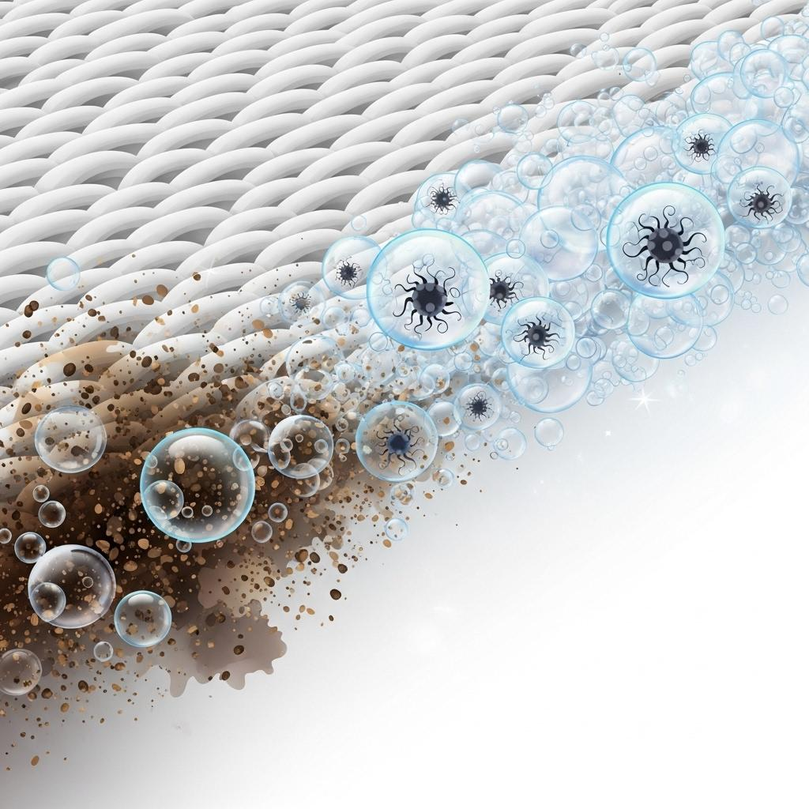

Baby & Sensitive
LAROE Laundry Detergent
섬유 깊숙이 깨끗하게
섬유 보호를 동시에
업그레이드된 세척력과 섬유 컨디션까지 고려한 설계
7중 효소 × 식물 유래 블렌딩 + 베이킹소다 함유
레몬그라스추출물 10mg/kg (10ppm), 황금추출물 10mg/kg (10ppm), 녹차추출물 10mg/kg (10ppm)
The Question
분명 세탁했는데...
왜 기분 좋은 향기가 나지 않을까요?
실내 건조의 한계
햇살 없는 건조 과정에서 발생하는
눅눅한 냄새
날씨의 영향
높은 습도와 장마철 공기로 인한 꿉꿉함
일상의 생활취
요리나 생활 속에서 섬유에 배어드는
각종 냄새
"중성세제만으로는 부족했던 섬유 속 유분 오염과 찌든 때를 제거하며
블랑향이 깊고 부드럽게 스며들어 온종일 지속됩니다."
Recommended For
바쁜 아침, 일일이 향수를 뿌리지 않아도 옷깃에서
번지는
은은한 잔향을 원하시는 분
아이와 반려견 때문에 강한 향수 사용은
꺼려지지만,
꿉꿉한 냄새는 고급스럽게 지우고 싶은 분
니치 향수에서 느껴지는 깊은 잔향처럼,
프리미엄 블랑의
여운을 느끼고 싶은 분
소량·개별 빨래를 자주 하시는 분
(한 번
돌릴 때마다
캡슐 세제가 늘 부담스러웠다면)
Point 01 — 7 Complex Enzymes
얼룩은 하나가 아닙니다.
그래서 효소도 하나로는 부족합니다.
7가지 복합 효소 시스템 × 식물 유래 블렌딩
레몬그라스추출물 10mg/kg (10ppm), 황금추출물 10mg/kg (10ppm), 녹차추출물 10mg/kg (10ppm)
프로테아제 & 리파아제
땀, 피지 등 단백질 분해
화장품, 기름 등 지방 분해
펙티나아제 & 아밀라아제
과일·채소 얼룩의 다당류 분해
녹말, 소스 등 다양한 얼룩 분해
만나아제
주스, 초콜릿 등 당류 분해
셀룰라아제 1·2제
컬러 컨디션, 브라이트닝 케어
찌든 오염 관리, 보풀 방지 케어

Point 02 — ph Balance
최적 세정력을 위한 pH 8~10 약알칼리 포뮬라
지방산과 단백질 성분 제거까지 필요한 일상 빨래에 최적화!
땀과 피지 분해 탁월: 섬유 속 깊이 박힌 체취와 땀 성분을 효과적으로 제거합니다.
강력한 얼룩 제거: 중성세제로는 잘 지워지지 않는 찌든 때와 생활 얼룩을 알칼리 환경에서 분해.
황변 현상 방지: 옷이 누렇게 변하는 원인인 단백질 오염을 분해하여 옷의 본래 색감 유지.
약알칼리 설계: 매일 사용하는 아기 의류 세탁에 적합할 수 있도록 과도하게 높은 알칼리가 아닌 pH 8~10 범위로 균형있게 설계되었습니다.
Point 03 — Fragrance & Care
섬유 속 오염과 생활취는 비우고, 그 자리에
포근한 잔향을
향으로 덮지 말고, 식물성 블렌딩으로 근본적인 냄새 원인을 해결하세요.
레몬그라스추출물 10mg/kg (10ppm), 황금추출물 10mg/kg (10ppm), 녹차추출물 10mg/kg (10ppm)
코코-글루코사이드 100mg/kg (100ppm), 카프릴릴/카프릴글루코사이드 100mg/kg (100ppm),
라우릴글루코사이드 ; C10-16-알킬글리코사이드 10,000mg/kg (10,000ppm)
베이킹소다의 함유량 10mg/kg(10ppm)
탈취 제어 기술: 사이클로덱스트린
세정 후 섬유에 남을 수 있는 냄새 분자를
포집하여
산뜻한 세탁 마무리를 돕습니다.
재오염 방지 설계: PVP
세탁 과정에서 떨어져 나온 오염이
다시
섬유에 부착되는
것을 줄이도록 돕는 설계입니다.
Top (Green Floral)
White Rose • Pink Pepper
Middle (White Floral Bouquet)
Violet • Neroli • Peony
Base (Woody Musk)
Sandalwood • White Musk
How to use
01. 사용방법
세탁세제를 해당 표준사용량에 맞춰 세탁기의 세제투입구에 투여하세요.
02. 표준사용량
일반세탁기
고 100L이상 70ml · 중 65~75L 50ml · 저 45~55L 30ml
드럼세탁기
대 드럼 2/3 7kg이상 40ml · 중 드럼 1/2~2/3이하 5~7kg이하 30ml · 소 드럼 1/3이하 5kg이하 25ml
펌프는 잠금 상태로 개별 포장되어 있습니다.
하단의 흰색 부분을 잡고 상단 펌프를 시계 반대 방향으로 돌려 잠금을 해제 후 용기에 끼워 사용하세요.
세탁 시 펌프를 끝까지 누르면 액체가 많이 나와 옷에 튈 수 있으니, 빨래 양에 맞게 눌러서 사용해 주세요.

FAQ
자주 묻는 질문
프리미엄 블랑향 아기 세탁세제는 드럼용/일반용이 나누어져 있나요? +
중성세제와 약알칼리 세제는 뭐가 다른가요? +
왜 중성세제가 아닌 약알칼리 세제인가요? +
아기 옷에도 사용 가능한가요? +
펌프가 안 올라와요! 불량인가요? +
Disclosure
안전확인대상생활화학제품 표시사항
| 품목 | 세탁세제 |
| 제품명 | 라로에 프리미엄 블랑향 아기 세탁세제 |
| 용도 | 섬유용, 섬유 얼룩제거용 |
| 제형 | 액체형 |
| 액성 | 원액(약알칼리성) |
| 용량 | 1L |
| 제조연월 | 별도표기 |
| 유통기한 | 제조일로부터 24개월 |
| 신고번호 | CB24-03-0028 |
| 제조국 | 대한민국 |
| 제조자 주소 연락처 | 주식회사 제이엔케이코스 / 경상북도 칠곡군 약목면 복성20길 72-8, 에이동 / 070-4757-8399 |
| 판매자 주소 연락처 | 라로에 laroe / 경기도 의왕시 백운호수로5길 15, 1층상가 104호(학의동) / 070-8287-2006 |
품질보증기준: 본 제품에 이상이 있을 경우 공정거래위원회 고시 소비자 분쟁 해결 기준에 의거하여 교환 또는 보상을 받을 수 있습니다.
사용 물질 및 성분명
| 주요물질 | 라우릴글루코사이드 ; C10-16-알킬글리코사이드 , 로릴 에테르 황산 나트륨, 벤젠설폰산, 4-C10-1 3-sec-알킬유도체, 정제수 |
| 보존제 | 벤조산 나트륨 |
| 알레르기물질 | 알파-이소메칠이오논 |
| 계면활성제 | 라우릴글루코사이드 ; C10-16-알킬글리코사이드 (비이온계), 로릴 에테르 황산 나트륨(음이온계), 벤젠설폰산, 4-C10-1 3-sec-알킬유도체(음이온계), 카프릴릴/카프릴글루코사이드(비이온계), 코코-글루코사이드(비이온계) |
| 기타물질 | 1,3,4,6,7,8-헥사하이드로-4,6,6,7,8,8-헥사메틸사이클로펜타[g]-2-벤조피란, 리모넨, 수산화 나트륨 |
사용 안내
표준사용량
일반세탁기 (고 100L이상 70ml, 중 65~75L 50ml, 저 45~55L 30ml)
드럼세탁기 (대 드럼 2/3 7kg이상 40ml, 중 드럼
1/2~2/3이하 5~7kg이하 30ml, 소 드럼 1/3이하 5kg이하 25ml)
사용방법
세탁세제를 해당 표준사용량에 맞춰 세탁기의 세제투입구에 투여하세요.
사용상 주의사항
- 제품의 내용물을 분무기 등에 담아 분사하지 마시오.
- 다른 제품과 섞어 사용할 경우 인체에 치명적인 손상을 입힐 수 있으니 섞어 사용하지 마시오.
- 표시사항에 기재된 제품의 용도 외에는 사용하지 마시오.
- 사람 또는 동물에 직접 사용(분사)하지 마시오.
- 어린이 손에 닿지 않는 곳에 보관하시오.
- 내용물을 마시거나, 내용물이 눈 또는 피부에 닿을 경우 인체에 심각한 손상을 입힐 수 있으니 주의하시오.
- 밀폐된 공간에서 사용 시 환기를 충분히 하시오.
- 피부가 민감하거나 손상된 사람은 제품을 장기간 접촉하지 않도록 주의하시오.
- 사용 후에는 밀폐하여 보관하시오.
- 0℃이하에 보관 시 동결될 수 있으며 녹인 후 흔들어 사용하여 주시오.
- 과다 사용 또는 장시간 의류에 담가 놓으실 경우 탈색 및 변색 등 세탁물에 손상이 갈 수 있으니 주의하시오.
- 표준사용량에 맞춰 사용하여 주시오.
응급처치
- 내용물을 먹거나 삼킨 경우 응급조치를 하고 즉시 의사와 상의하시오.
- 눈에 들어갔을 때는 즉시 씻어내시오.
- 피부자극 반응 또는 붉은 반점이 나타나면 의학적 조치를 받으시오.